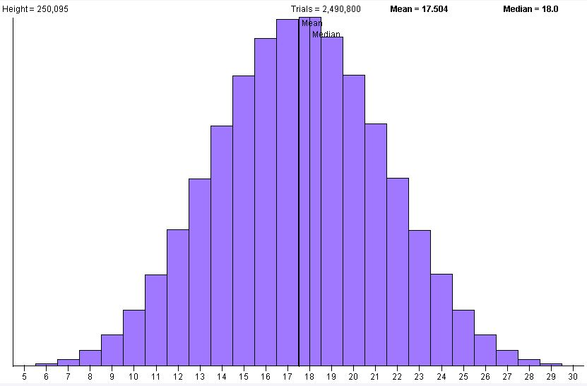
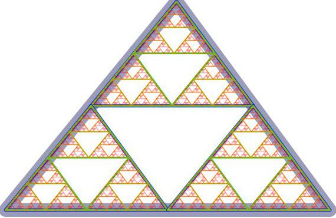
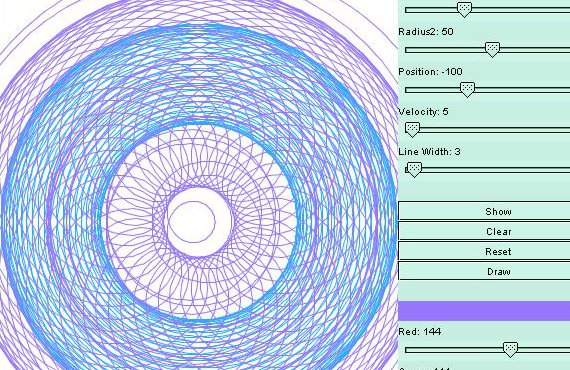

A collection of simulations written in Scala. Examples include reaction diffusion, fractals, snakes, stocks, dice, fluid flow, and many more.
I used to deploy this application as applets or using WebStart, but that fell out of favor, so now I use a zip file that you can unpack and run locally. After unpacking, go into the bin directory and run one of the following. Note that if you are on Windows, you need to use the *.bat version of the script to run.
Dice |
./bb4-simulator panel_class com.barrybecker4.simulation.dice.DiceSimulator |  |
Reaction Diffusion |
./bb4-simulator panel_class com.barrybecker4.simulation.reactiondiffusion.RDSimulator' | |
Sierpinski triangle |
./bb4-sierpinski' |  |
Spirograph |
./bb4-spirograph' |  |